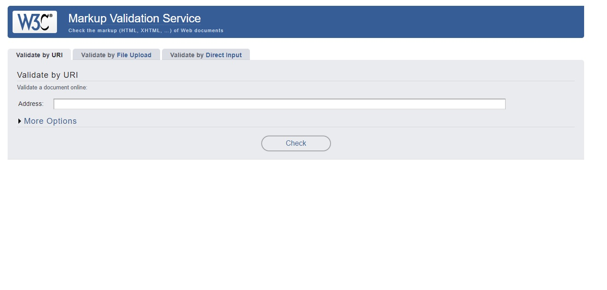

What is W3C
This validator checks the markup validity of Web documents in HTML, XHTML, SMIL, MathML, etc. If you wish to validate specific content such as RSS/Atom feeds or CSS stylesheets, MobileOK content, or to find broken links, there are other validators and tools available. As an alternative you can also try our non-DTD-based validator.

Image added for reference.
- The World Wide Web Consortium (W3C) is an international community where Member organizations, a full-time staff, and the public work together to develop Web standards.
- Fun Fact is W3C does not have a single physical headquarters but there are four institutions that "host" W3C: MIT (in Cambridge, MA, USA), ERCIM (in Sophia-Antipolis, France), Keio University (near Tokyo, Japan), and Beihang University (in Beijing, China).
- It follows two principles as Web for all, Web on everything.
- Vision of W3C is Web of consumers and authors, data and services, trust.